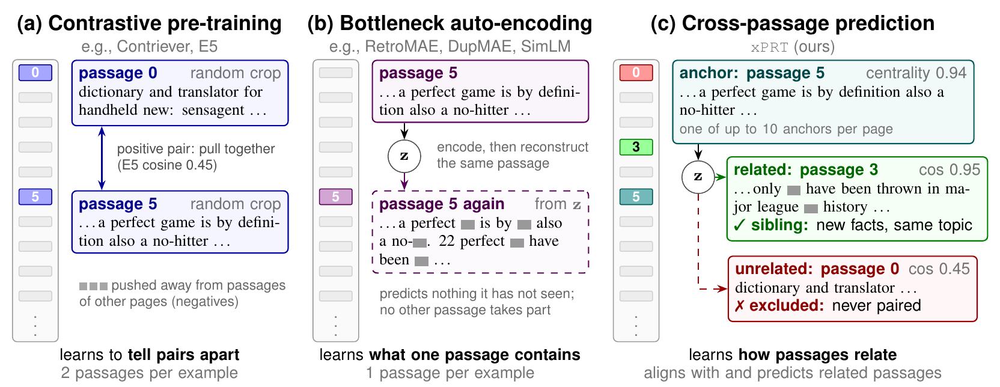
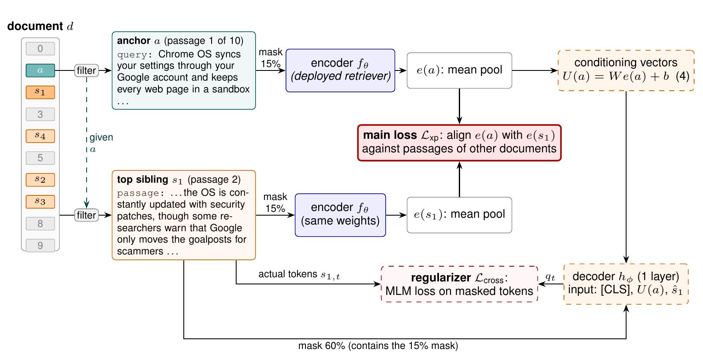

Contents · 8 sections
1What problem is it solving?2The pipeline at a glance3How anchors and related passages are chosen4The objective: the main loss changes the positive5Experiments: what the results show6Where I think it falls short7How a search team could try it8VerdictSHARE
Teams that pre-train embedding retrievers should read this paper, because it finds a new source of supervision that needs no labels: which passages of the same web page talk about related things. xPRT first picks, in each document, passages that represent the page's topic (call them "anchor passages"), then finds for each anchor the four passages of the same document most related to it (call them "related passages"). It then trains the embedding to do two things: the anchor must pick out its most related passage of the same document from a set of candidates mixed with passages of other documents, and once most words of a related passage are masked, a one-layer decoder must use the anchor's vector to fill them back in. Continuing pre-training from E5, which was already contrastively pre-trained at large scale, with the corpus, steps and schedule fixed and only the objective changed, across the three corpus sizes, five established objectives gain at most 0.38 points on the 41-task MTEB average, while xPRT gains 1.80 to 1.87 points consistently. What matters most is how positives are chosen; the new fill-in term adds only a small part.
What problem is it solving?
What xPRT changes is the positive: from "two random spans" to "an anchor paired with the most related passage of its document". The reason is that in existing methods, contrastive learning cuts two random spans from one document and calls them a pair, and auto-encoding methods such as RetroMAE and SimLM only make a vector rebuild its own passage, while web pages carry a lot of off-topic material, so random pairing forces the body text and that material together.
Figure 1 of the paper uses a real FineWeb page about the "perfect game" in baseball. Here are three of its passages, with the paper's numbers:
| Passage | Content | Closeness to the whole page | Similarity to passage 5 |
|---|---|---|---|
| Passage 5 | A perfect game is by definition also a no-hitter | 0.94 | — |
| Passage 3 | How many perfect games have ever been thrown in major league history | — | 0.95 |
| Passage 0 | A "dictionary and translator" widget | — | 0.45 |
"Closeness to the whole page" is the cosine between the passage's E5 vector and the mean vector of all the page's passages; the paper calls it centrality. Under random pairing, passage 5's partner can be any passage on the page, the dictionary widget in passage 0 included, and the model is asked to treat a baseball rule and a page widget as "related". xPRT lets only anchor passages such as passage 5 act as the asking side, takes only truly related passages such as passage 3 as answers, and never puts passage 0 into a training pair.
This matches the relation retrieval needs: a query and the passage that answers it are about the same thing without repeating each other, and passage 3 adds facts that passage 5 does not have.
The pipeline at a glance

The method has two steps: pick the training groups once before training, then update the encoder with those groups.
| Step | What it does | Output |
|---|---|---|
| Split | Cut documents into 128-token passages; drop documents with fewer than 5 passages | A passage list per document |
| Pick anchors | With frozen E5, compute each passage's cosine to the page's mean vector; keep those above 0.825, fuse the centrality ranking with a ranking by the passage's mean token IDF via RRF, and keep the top 10 per document | Anchor passages |
| Pick related passages | For each anchor, rank the other passages of the document by fusing an E5-cosine ranking and a TF-IDF ranking; keep the top 4 | A group = 1 anchor + 4 related passages |
| Train | Contrastive loss + fill-in loss + a few regularizers | An updated encoder |
| Deploy | Drop the decoder, the projection and the MLM head | The same BERT-base retriever as before |
On the 100K-document corpus, 99% of documents yield training groups, 7.0 per document on average, covering 68% of all passages. At serving time only the encoder with mean pooling is used, so inference cost does not change.
How anchors and related passages are chosen
Why pick anchors first? If the asking side is a navigation bar or a contact block, no passage of the document can answer it, and the training pair is just noise. Table 5 in the appendix lists examples: in an article about the Ford F-Series, the passage least related to the anchor is a list of music-video links; in a policy report on carbon capture it is a list of press contacts. These passages have a cosine of only 0.38 to 0.45 to the anchor, while the most related passage on the same page has 0.85 to 0.95; their own centrality is only 0.46 to 0.51, below the 0.825 threshold.
Related passages are ranked on two similarities at once: E5 vector cosine and TF-IDF. RRF fuses the two rankings, with the E5 rank weighted twice as much as the TF-IDF rank. An illustrative case: candidate A is 1st by E5 cosine and 6th by TF-IDF, candidate B is 2nd on both, and with the formula in the paper's appendix, A scores 0.244 and B 0.250, very close, with B slightly ahead. Related passages can come from anywhere in the document; they need not sit next to the anchor.
The objective: the main loss changes the positive
The main loss is the usual symmetric InfoNCE, the same form as contrastive pre-training such as Contriever. What changes is the positive: the positive of anchor is its top-ranked related passage , and the negatives are the top related passages of the other groups in the same batch. The other three related passages of each group do not enter this term; they are used only in the fill-in loss below.
Here and are the mean-pooled vectors of the two passages, the denominator sums over the top related passage of every group in the batch, and the temperature is . The paper uses the symmetric version: in reverse, must pick out its own among the anchors of the other groups, and the two terms are averaged. Other groups from the same document are excluded from the negatives, because they are related too. A hand-checkable illustration: with only 3 groups in the batch, has cosine 0.8 to its own and 0.5 to the other two; divided by 0.05 that is 16 against 10, so the positive gets probability . With a temperature this low, a cosine gap of 0.3 is already enough to separate them.
With the contrastive loss alone, the vector only has to sit close to the right passage; it does not have to hold that passage's content. The fill-in loss adds exactly that. First, the anchor's vector is mapped linearly to 4 conditioning vectors. The related passage, with 60% of its tokens masked, is turned into a sequence of vectors through the token embedding table shared with the encoder, and the 4 conditioning vectors are inserted right after [CLS]. This input goes to a one-layer decoder, which predicts the masked words through the MLM head it also shares with the encoder. One Transformer layer cannot recover them from the remaining 40% alone, so it has to rely on the anchor's vector, and that vector has to carry what the two passages share. The same is done in reverse, with each related passage's vector filling in the anchor. This term has weight 0.1. Hoot says

- the fill-in loss can only drop through the passage vector
- masked, to restore
- visible to the decoder
- Mask 15%: 17 visible tokens to restore 3, and the one-layer decoder manages from context alone. Mask 60%: 8 visible to restore 12, beyond one layer, so it must read the 4 condition vectors made from the passage vector, which therefore has to hold the content both passages share.
xPRT's contribution is making a retrieval vector not just close to the right passage but able to hold its content. In the fill-in loss the related passage loses 60% of its tokens and a one-layer decoder restores them; for contrast, the encoder path masks only 15%. Source: illustrative example of the fill-in loss in the paper's §4
Three more terms are auxiliary. , applied only to the anchor and the top related passage , makes the same decoder fill in a passage's own words from that passage's own vector, with the encoder's word distribution under a light 15% mask as the target. Because uses the encoder's word distribution as the teacher, an MLM term () is added so the teacher itself does not drift. is the uniformity loss of Wang and Isola: the closer the normalized vectors of any two anchors in the batch, the larger the penalty, so the vectors do not collapse into one cluster. Each group costs 5 encoder passes in training (the anchor and the 4 related passages each go through once with 15% masking, and both the fill-in vectors and the self fill-in teacher distributions come from these 5 passes) and 10 one-layer decoder passes (8 for fill-in in both directions, plus 2 self fill-ins for and ). In continued pre-training, the retention term adds one more frozen-E5 pass.
Continued pre-training has one more risk that is easy to miss: washing out what E5 already learned. The authors give every method, baselines included, the same retention term. For xPRT, the anchors and top related passages of the batch are used: the current model and frozen E5 each compute an anchor-by-related-passage similarity matrix. Each row belongs to one anchor: a softmax over its similarities to all related passages in the batch gives a distribution of which related passages this anchor resembles more. The column direction (related passages looking for anchors) gets the same softmax; in each direction a KL from E5's distribution to the current model's is computed, and the two are averaged, pulling the current model toward E5. Frozen E5 runs as a separate pass during training on the unmasked text. The weight of this term falls from 40 to 0 over training.

Experiments: what the results show
The main experiment asks whether a retriever that is already strong can still learn from the relations among passages inside a document. Training starts from E5-base-unsupervised and runs once each on 100K, 500K and 1M FineWeb documents at learning rate . The five baselines use their official implementations with the same corpus, training groups, steps, batch, learning-rate schedule and retention term as xPRT, and nothing is fine-tuned before evaluation. The passages each method reads differ: the four within-passage methods use only the anchor of each group, and Revela adds 11 anchors of other documents to each group's anchor and 4 related passages.
| Corpus | Method | MTEB avg. (41 tasks) | vs. E5 | Retrieval nDCG@10 |
|---|---|---|---|---|
| — | E5 (start) | 53.06 | — | 43.26 |
| 100K | RetroMAE | 52.92 | −0.14 | 42.41 |
| 100K | DupMAE | 52.97 | −0.09 | 42.44 |
| 100K | SimLM | 51.01 | −2.05 | 36.93 |
| 100K | BoW-DPR | 53.14 | +0.08 | 43.11 |
| 100K | Revela | 53.02 | −0.05 | 42.99 |
| 100K | xPRT | 54.86 | +1.80 | 45.78 |
| 500K | xPRT | 54.93 | +1.87 | 45.67 |
| 1M | xPRT | 54.89 | +1.83 | 45.33 |
(Paper Table 1; scores ×100.) At 100K, xPRT beats E5 on 34 of the 41 tasks, while four of the five baselines end below the starting point. This shows that on a model like E5, which has already seen hundreds of millions of text pairs, objectives that rebuild a passage from itself learn almost nothing new; the same data with cross-passage supervision does produce a gain. Revela trains on the same groups: a small language model (Qwen2.5-0.5B with LoRA) predicts each passage while its attention can see the other passages of the group, and the higher the retriever's similarity between two passages, the more attention weight that passage gets. The retriever gets its training signal only from which passages help the language model predict better, so the relation between passages never acts on the embedding directly. Revela stays below the E5 starting point at all three sizes, by 0.05 to 0.26 points, and the within-passage methods gain at most 0.38 points.
Training from BERT directly (100K documents, six epochs) widens the gap: xPRT averages 47.12 against 42.73 for SimLM, the strongest baseline, and retrieval nDCG@10 is 29.21 against 20.68. So the gain does not depend on a contrastive starting point like E5.
The ablations, run in the BERT setting (paper Table 3), show how much each part carries:
| Variant | MTEB avg. | Retrieval nDCG@10 |
|---|---|---|
| Full xPRT | 47.12 | 29.21 |
| Without the fill-in loss | 46.67 | 28.46 |
| Without the fill-in loss, positive = random passage of the same document | 42.22 | 19.87 |
| Positive = another document's top related passage (related to that document's anchor) | 40.80 | 18.03 |
| Self-reconstruction only, all five passages | 42.62 | 19.20 |
| Related passages ranked by E5 cosine only | 44.82 | 25.88 |
| Related passages ranked by TF-IDF only | 47.10 | 29.89 |
Removing the fill-in loss costs only 0.45 points, but replacing the positive with a random passage costs 4.9 points and drops below SimLM. The fill-in objective is a bonus; choosing the right positive is the main gain. Giving self-reconstruction as much text or more, with up to five times the steps, still leaves retrieval at 18.8 to 19.2, so what is missing is the cross-passage signal, not data volume. How related passages are ranked matters less, but not nothing: ranking by E5 cosine alone costs 2.3 points, while TF-IDF alone stays level with the fused ranking, with slightly higher retrieval scores.
Where do the gains land? At 100K, STS rises 3.5 points and retrieval 2.5 points, while reranking barely moves. Within retrieval, the biggest gains are on tasks where query and target are linked by an argument: ArguAna +5.8 and Touché-2020 +6.6. In ArguAna the target is the counter-argument to the query. The authors split queries into thirds by word overlap with the counter-argument, and xPRT beats E5 in every third by 3.7 to 8.8 points, whereas BoW-DPR, which only learns word overlap, loses 10.3 points in the lowest-overlap third. This shows that xPRT learns "this passage responds to that one", not just which words they share.
Where I think it falls short
First, domains far from web text may lose. Two retrieval tasks drop: TREC-COVID by 1.4 and FiQA by 1.1, both specialized domains (medicine, finance) far from web pages. Going from 100K to 1M documents, retrieval nDCG@10 even falls from 45.78 to 45.33, mainly because TREC-COVID and FiQA keep sliding, which means more web text does not win these specialized domains back; the authors attribute the overall plateau to the very low learning rate and the decaying retention term.
Second, picking the training groups depends on an existing good model. Anchors and related passages are all chosen with frozen E5, and even the from-BERT runs use these groups, so "unlabelled documents only" holds given E5 already exists. The anchor filter also measures how representative a passage is, not its quality: in Table 5, the legal disclaimer of a site-policy page has centrality 0.95 and still becomes an anchor.
Third, the tested scope is narrow. Only BERT-base-sized encoders are tested, and every evaluation is without fine-tuning. Real retrieval systems usually fine-tune on labelled data afterwards, while xPRT's 1.8 points were measured with no fine-tuning at all; whether fine-tuning erases that gap is the first thing to test before deployment.
How a search team could try it
- Change only the positive first: in an existing contrastive pre-training pipeline, replace random spans with "anchor paired with its most related passage", choosing them with an off-the-shelf embedding model plus TF-IDF. In the ablations this step carries most of the gain, and it costs only one offline selection pass.
- Check the filter on your own corpus: sample a few dozen documents and see whether anchors and excluded passages match body text and navigation or footers. The 0.825 threshold was set on FineWeb and needs retuning on other data.
- On an in-domain retrieval set, compare "continued pre-training then fine-tuning" against "fine-tuning directly" to confirm the gain survives fine-tuning, and watch sub-domains far from web text, where the paper saw drops.
- If it works, add the fill-in decoder; it exists only during training and adds no serving cost.
Verdict
The key lesson: the bottleneck of unlabelled retrieval pre-training is often not the loss function but where the positives come from; pairing truly related passages from the same document works better than swapping in any reconstruction objective.
| Dimension | Assessment |
|---|---|
| Problem importance | Medium-high. Pre-training data for embedding retrieval is almost all unlabelled, and positive quality decides what can be learned |
| Novelty | Medium. The loss forms are standard; what is new is which passages get paired, and the ablations show that is the key |
| Evidence | Fairly strong. Baselines share data, steps and retention term, results agree across three corpus sizes, and the ablations are detailed; missing are post-fine-tuning results and larger models |
| Engineering cost | Low to medium. Selection is one offline pass, training costs 5 encoder forward passes per group, and serving cost is unchanged |
| Worth trying | Yes. Start with the "change only the positive" version; it is cheap and the success criterion is clear |
How did this read for you?
Hoot made a note. Thanks for the feedback.
One tap, no sign-in; tap again to undo. Only anonymous counts are kept, never who you are.
Discussion
Add experiment details, reproduction notes or a different take. Requires a GitHub sign-in.
Loading the discussion…